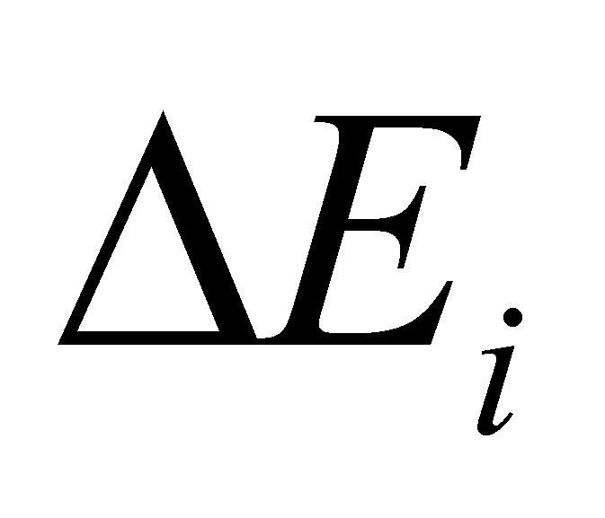

|
|
|
Based on the current knowledge regarding the atoms’ internal structure, but by using the notions which are specific to this paper, we may identify distributions, objects, processes and internal fluxes belonging to these types of MS. The purpose of this annex is not to make a review on the nuclear internal structure, what really matters to us is just the assertion upheld by this paper, that the atomic nucleus (for a certain type of atom) has an invariant spatial structure, with an internal RS, structure which also determines the invariant configuration as well (for the same atom type) of the spatial distribution of the electron’s orbitals which make-up the external (peripheral) DS115 of the atom. As a result of this nuclear structural stiffness, the atomic peripheral DS, which is made-up from electrons only, has also a rigid structure116, which means that it is a S-type DS (more exactly, SR-type, in which the constitutive elements are maintained despite the alleged repulsion between them, by the powerful electrical interaction deployed with the central subsystem - the nucleus with its positive charges).
The main argument for the existence of the structural stiffness of the orbitals where the atomic electrons are found is even the stiffness of S-type media made-up from atoms or molecules, stiffness which could not exist if the covalent or ionic bonds (interactions) deployed between atoms would not have stable preferential directions and invariant spatial positions against the atomic internal RS. Within the peripheral electronic DS, the motion of each electron has unique and invariant state attributes (whose existential attributes make-up, among others, the so-called set of quantic numbers), although each of these electrons performs multiple motions (therefore, they are fluxes).
This means that the quantic numbers which defines the state of a specific electron are quantitative (existential) attributes of some invariant processual qualitative attributes, namely, they are parameters of some invariant fluxes. Since we are talking about fluxes, which are objects set in motion, it is clear that the position of the moving electron is non-determined, but in exchange, some invariant attributes for the velocity or the acceleration of the object can be defined (with its equivalent, that is the energy or the orbital frequency), for the spatial distribution of the flux line (plane, radius, orbital axis, position of the axis and of the orbital plane against the atomic RS, which coincides with the nuclear one), distance of the orbital plane against the nucleus (which is invariant for a certain electronic layer), etc. Consequently, if we cannot define the position of an electron, we can however define the position of the orbital on which it is placed.
Definition X.24.1.1: The abstract object made-up from the set of all the invariant state attributes of an EP bonded in a bi-particle system (proton-electron couple) is named orbital. The attributes are determined against the internal RS of the material system to which the couple belongs to.
Comment X.24.1.1: This definition marks another net distinction between the objectual philosophy and the current physics which states that the motion of the constitutive elements of an atom has a purely probabilistic character (being defined by Schrodinger equation). The “orbital” concept may be also found in the current physics, but here, this abstract object defines a spatial domain in which a probability wave is being framed. As we have seen in chapter 7 and as we are going to see further, the objectual philosophy states that a constructive interaction between two components of a MS can exist if only there is a close inter-correlation between their fields, which cannot exist between two “probability waves”.
The term of bonded EP means an EP which is part from a couple of EP with opposite charges, which deploy a permanent interaction, belonging to the atoms or neutrons composition; therefore, we shall have two orbital types - atomic and neutronic orbitals - with very different bond energy values, but which are similar in terms of model. Since we are talking about dynamic material systems (a static equilibrium cannot be conceived between two bonded EP with opposite charges), which means that the system’s elements are in a continuous motion, it is clear that the individual position of the particles is non-determined, but there are state attributes Sx (x0) or derivatives from, which can be invariant during the bonding time interval.
Comment X..24.1.2: This kind of attributes may be observed at other system with a purely dynamic equilibrium - our planetary system. In this case also, the planets position against the internal RS of the planetary system is non-determined117 (since they are in a continuous motion), but there are states attributes, such as the orbital frequency, spin frequency118, direction of the orbital axis and of the spin one, the orbital and spin plane, the mean orbital radius etc. which may be considered as invariant (for specific temporal support intervals and for a non-disturbed system).
It is worth mentioning that in case of a bonded EP, each EP has its own orbital, but the attributes of the two orbitals are inter-correlated, as we are going to see later on (the same as the particles are coupled through their fields, their orbitals are „coupled” as well). The existential attributes of the model attributes which describe the orbital abstract object are settled during some natural interaction processes between the MS elements (we may say that they are self-settled), so that few compulsory conditions to be fulfilled.
Interaction between the elements of a couple must be constructive, condition which determines, among others, the velocity (energy) and the orbital radius of the elements, so that the frequency of the space-temporal modulation frequencies of the fields belonging to the couples’ elements to be synphasic, otherwise speaking, the orbitals parameters of the two particles must be closely correlated. As a result of this inter-correlation between the parameters of the coupled orbitals, the re-circulated fluxes between the two bonded EP (fluxes which are carriers of the bonding energy) tend towards a maximum value, value which is reached in case of the orbital’s fundamental state.
The spatial positions of the axes and orbital planes of the couples involved in the system are the result of the equilibrium between the re-circulated fluxes deployed both between the elements of the same couple, but most of all, between the elements of the different but proximate couples (moreover, between the satellite elements in case of the existence of some repulsion forces, when the elements, together with their orbitals will try to set a distance between them, as much as possible).
Because all the elements from the structure of a MS based on orbitals119 are MS as well, with simultaneous existence, therefore, with a RBS and a specific volume, it is natural to exist a space-temporal exclusion both of the positions characteristic to the elements of this MS (positions which are non-determined but they are placed in the volume occupied by the orbital), as well as to the orbitals where they are located, the set of the existential attributes of these orbitals is therefore different for each element participating to this MS. The space-temporal exclusion of the orbital moving EP, is determined also by the fact that such movement generates a RBS with a non-permanent distribution of the permeability (see section 7.2.6), but this RBS behaves in some circumstances (for certain fluxes) as a material object.
If we shall take into account the classification of the internal fluxes of MS mentioned in chapter 7, it may be noticed that the EP orbitals involved into a MS (for example, an atomic one) may be divided in two categories:
Orbitals with a simultaneous existence, where all EP with simultaneous existence from the composition of that MS can be found throughout the entire lifetime of a MS, these orbitals comply with the above-mentioned space-temporal exclusion rules, each of them is different, mostly (but not only) by means of their spatial attributes. According to the classification of the internal fluxes of MS, these orbitals are considered as structural orbitals (SO), because they contain structural fluxes which determine the spatial structure of MS.
Orbitals with disjoint energetic-temporal distributions (on short, energetic-temporal orbitals), made-up from the set of the energy levels accessible to the same EP, placed on the same structural orbital from the composition of a MS, that EP being able to occupy at a certain moment, only a single orbital from this set; therefore, these orbitals are different mostly120 due to the energy which EP has it at a given moment, and due to this reason, they may be called as energetic orbitals (EO), because these orbitals are actually different energetic states of a given SO. The set of these EO contains a fundamental orbital (the orbital where that particular EP may be found within a non-disturbed MS, in the absence of external energetic fluxes (EF), orbital where the energy of the occupant EP is minimum and the re-circulated EF with its partner is maximum), and more excited orbitals, which are different mostly due to the energy surplus of the occupying EP against the fundamental level, and accordingly, by decreasing the re-circulated EF. The relation between the EP’s energy which occupies a specific EO and its bonding energy shared with its partner is inverse proportional, so that, if the energy surplus of EP reaches a certain level, the re-circulated flux is cancelled and EP leaves the system (see section 7.8, law IV).
It is worth mentioning that each SO is related to a series (a set) of EO, with the energy of each one depending on the intensity of the external energy fluxes which acts on that atom and on the quantity of energy which is sent by these fluxes to the particle which occupies the orbital.
Comment X.24.1.3: It is worth noticing that the numbers of structural electronic orbitals in case of an atom is Z, and each of these orbitals has a series of energetic orbitals; as regards the MS with a single electron, such as the hydrogen atom, it is clear that there is a single structural electronic orbital and a related series of the energetic orbitals which are accessible to this electron.
Let us presume that the sets of the model attributes which are characteristic to a couple from the structure of an atom with an atomic number Z, placed on a pair of SO under fundamental energy state are:
(X.24.1.1)
for the protonic orbital and:
(X.24.1.2)
for the coupled electronic orbital. The abstract objects SO are written under the syntax of the abstract objects, in which represents the existential (quantitative) attribute conjointly associated to the qualitative attribute of structure Axk (type of the state attribute121 which is characteristic to a specific SO), with epf and eef as the energy amounts which are assigned to the two ECPs which are found on that SO, under a fundamental state (marked with the index f).
The existential attributes exk are sets of scalars (either they are integers or fractionals) which according to the current nomenclature is named „quantic numbers”. The qualitative attributes associated to these sets of numbers are even the state attributes which are characteristic to a SO, aspects which were previously mentioned, and the values of the quantitative attributes associated to them are determined against an internal RS of the couple. For example, in case of a hydrogen atom (if a planetary model would be used only for simplicity reasons), the distance between particles d may be considered as an invariant attribute (under a fundamental state), distance which is divided in two intervals rp and re, () by the common mass-centre (internal T reference) of the system. By considering this reference T as center, the two particles deploy revolution motions in the same plane, with the common orbital frequency f1 (in case of the non-disturbed system, which is under a fundamental state).
Comment X.24.1.4: In case of the motion of a single isolated couple of elements, the orbit’s plane is indeed a common one. As regards the motion of more satellite elements between which there are no repulsion forces (such as the planetary system), there is also a single orbital plane for each couple consisting of central system-satellite. However, if the number of satellites is and there are repulsion forces which are deployed between them (such as the case of the atomic electrons starting with He), then, the orbital planes of the elements engaged in the couple are not unique any longer, but they are kept at distance (an orbital plane for the central element and another one for the satellite element, but with a common orbital axis. The only thing which is really important for us right now is only the fact that the orbits’ axis remains common as regards the elements of a couple, and its spatial (angular) position against an internal RS may be an invariant state attribute.
The two motions of the elements belonging to a couple of EP have also some associated attributes: the common orbital rotation axis, normal on the orbital plane, but most of all, the two frequency related to the motion of the two EP, frequency who modulates the intensity of the flux released by that particle.
Comment X.24.1.5: When we have described the generic MS model, we saw that the essence of the maintenance of such a system is the constructive interaction, process during which an EF exchange is carried out between the objects which make-up the system, fluxes which may be found anyway into the emerging fields from each MS, but in case of the constructive interaction, these fluxes lead to at least a partly compensation of the energy losses of the MS elements. Because the intensity of these fluxes in a specific point depends on the spatial position against the flux source, and on the temporal variations of this position, we might say that the density of that particular flux has a space-temporal distribution, which according to chapter 7, it is named field.
The constructive interaction between two MS takes place if the flux received by an element of the system from its partner is phased with its motion at that particular moment (this, as regards EF; in case of the structural fluxes (SF) the flux received must be phased with the partner’s flux demand). To be phased (in terms of energy) means that the external traflux coming from the partner has the same sense as the coherent component of the internally stored flux of the driven MS, in other words, that received flux maintains the motion of the driven MS rather than making opposition. Since the internal motion processes of the elements of a dynamic MS are periodical processes, this means that the proper movements of the bound elements must be phased (at least at the harmonics level) so that a constructive interaction can be deployed.
Comment X.24.1.6: The problem of constructive interaction between two periodical processes is well-known by the ones who design oscillating systems. It is known that if an oscillation (of a mechanic or electric system) is needed to be maintained for an unlimited period, it must that the energy which is inherently dissipated by the system during each period to be compensated by an external source, and this compensation must be constructively carried out (namely, phased or otherwise called “with positive reaction”). This compensation can be done during each period, or at an integer number of periods. In the first case, we may say that there is a compensation made on the fundamental frequency, and in the second one, we are dealing with a compensation on harmonics122(for example, in case of quartz stabilized oscillators, where the quartz has a frequency fq and the oscillating circuit is adjusted on the frequency kfq where k=2, 3...etc.). Therefore, in case of the total compensation of the energy loss occurred within a real periodical process with a basic frequency f1, a finite energy “portion”  must be provided to driven MS equal with the amount which is lost in a period, delivery which is also carried out with the frequency f1 (in case of the total compensation).
If we are returning to the model of the hydrogen atom, as we have previously seen, if it is required that the interaction of the two EP to be constructive, the two space-temporal modulation frequency (due to the orbital motions of the two EP) must be either identical (such as the fundamental state, when the intensity of the re-circulated EF is maximum), or in proportion with the integer numbers (case of the meta-stable excited states, when the intensity of the interchange flux is reduced under the same integer ratio), but which are compulsorily phased.
115 Both the external electrons of the atoms and the nucleons from the nucleus composition make-up DS, because only the elements from the close proximity interact one another. However, due to a low number of elements, they barely can be called as media, although internal propagation phenomena can also occur at DS with few elements.
116 Attention! Rigidity not as regards the electrons position, but on the level of the orbitals occupied by these electrons. The same remark is also applicable for the nuclear rigidity.
117 The position of a planet on the sky seems to be determined because its continuous variation is much under the perception threshold of our visual system because of the enormous distances towards them.
118 The term of spin frequency was introduced for the self-rotation frequency of the planet around its axis, even due to the similarity with EP which have also a rotation motion around its own axis with that denomination.
119 The sytems which are based on orbitals are, for instance, NC, AT, MO but also PS, which are mostly MS whose elements are characterized by periodical movements.
120 It is obvious that a structural orbital which is under a fundamental state and the same orbital subjected to an excited state must be different through other attributes (such as for example, the radius and the orbital frequency) but its arrangement (position of the spatial internal reference of the orbital) against the atomic RS remains invariant.
121 Attention ! We are talking about the state attributes which can exist simultaneously in a specific temporal interval. As we have mentioned in the chapters focused on objects and processes, the state attributes such as the position and velocity cannot exist simultaneously, neither two energetic levels of the same SO.
122 It is clear that, in terms of quantity, the energy lost during k periods is higher than the energy lost in a single one, therefore, for maintaining the same oscillation level, the energy amount supplied for the harmonics compensation must be higher.
Copyright © 2006-2011 Aurel Rusu. All rights reserved.